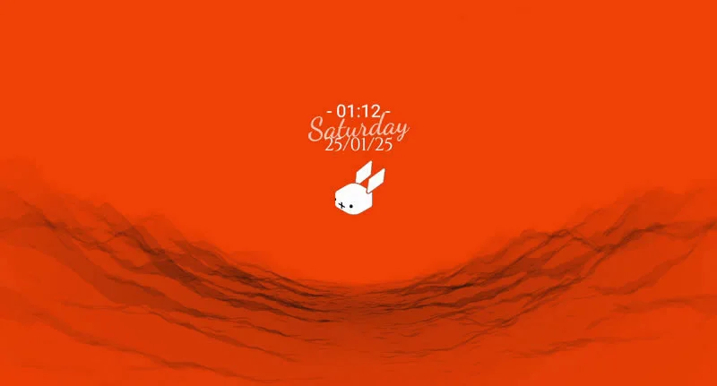

RABBIT WORLD ON LIVELY WALLPAPER // MONDO RABBIT SU LIVELY WALLPAPER // MONDE RABBIT SUR LIVELY WALLPAPER // RABBIT WELT AUF LIVELY WALLPAPER // MUNDO RABBIT EN LIVELY WALLPAPER // LUMEA RABBIT PE LIVELY WALLPAPER // रैबिट वर्ल्ड ऑन लाइवली वॉलपेपर // ラビットワールド ON LIVELY WALLPAPER // 래빗 월드 ON LIVELY WALLPAPER // MUNDO RABBIT NO LIVELY WALLPAPER // МИР RABBIT НА LIVELY WALLPAPER // RABBIT VÄRLDEN PÅ LIVELY WALLPAPER // СВЕТЪТ НА RABBIT ВЪРХУ LIVELY WALLPAPER // SVĚT RABBIT NA LIVELY WALLPAPER // RABBIT VERDEN PÅ LIVELY WALLPAPER // RABBIT WERELD OP LIVELY WALLPAPER // RABBIT MAAILMA LIVELY WALLPAPERILLA // ΚÓΣΜΟΣ ΤΟΥ RABBIT ΣΤΟ LIVELY WALLPAPER // DUNIA RABBIT DI LIVELY WALLPAPER // DUNIA RABBIT DI LIVELY WALLPAPER // ŚWIAT RABBIT NA LIVELY WALLPAPER // MUNDO RABBIT NO LIVELY WALLPAPER // SVET RABBIT NA LIVELY WALLPAPER // 兔子世界在LIVELY WALLPAPER上 // 兔子世界在LIVELY WALLPAPER上
Animated desktop wallpapers, bring your desktop to life! // Sfondi animati del desktop, porta in vita il tuo desktop! // Fonds d'écran animés du bureau, donne vie à votre bureau! // Animierte desktop-hintergründe, bringe deinen desktop zum leben! // Fondos de escritorio animados, haz que tu escritorio cobre vida! // Fundaluri animate pentru desktop, adu viață pe desktopul tău! // एनिमेटेड डेस्कटॉप वॉलपेपर, अपने डेस्कटॉप को जीवन दें! // アニメーションデスクトップ壁紙、デスクトップを生き生きさせる！ // 애니메이션 데스크탑 배경화면, 데스크탑을 생명에 불어넣어라! // Papéis de parede animados para desktop, traga vida ao seu desktop! // Aнимированные обои для рабочего стола, оживите свой рабочий стол! // Animerade skrivbordsbakgrunder, ge liv åt din skrivbord! // Aнимирани фонове за бюро, дай живот на бюрото си! // Animované pozadí pro desktop, dejte život vašemu počítači! // Animerede skrivebordsbaggrunde, bring liv til din skrivebord! // Geanimeerde bureaubladachtergronden, breng je bureaublad tot leven! // Animoidut työpöytätaustat, tuo elämää työpöytääsi! // Κινούμενα ταπετσαρίες επιφάνειας εργασίας, δώστε ζωή στην επιφάνεια εργασίας σας! // Dinding desktop animasi, hidupkan desktop anda! // Dinding desktop animasi, hidupkan desktop anda! // Animowane tapety pulpitu, ożyw swoje biurko! // Papéis de parede animados para desktop, traga vida ao seu desktop! // Animované pozadie pre desktop, dejte život vašemu počítaču! // 动态桌面壁纸，让你的桌面活起来！ // 動態桌面壁紙，讓你的桌面活起來！
Lively is a Free and Open Source Software (FOSS) // Lively è un software gratuito e open source (FOSS) // Lively est un logiciel gratuit et open source (FOSS) // Lively ist eine kostenlose und quelloffene Software (FOSS) // Lively es un software gratuito y de código abierto (FOSS) // Lively este un software gratuit și cu sursă deschisă (FOSS) // Lively एक मुफ्त और ओपन सोर्स सॉफ्टवेयर (FOSS) है // Livelyは無料でオープンソースのソフトウェア（FOSS）です // Lively는 무료 및 오픈 소스 소프트웨어 (FOSS)입니다 // Lively é um software gratuito e de código aberto (FOSS) // Lively — это бесплатное и открытое программное обеспечение (FOSS) // Lively är ett kostnadsfritt och öppen källkod-program (FOSS) // Lively е безплатен и отворен източник на софтуер (FOSS) // Lively je bezplatný a otevřený software (FOSS) // Lively er et gratis og åben kildekode-program (FOSS) // Lively is gratis en open source software (FOSS) // Lively on ilmainen ja avoimen lähdekoodin ohjelmisto (FOSS) // Lively είναι δωρεάν και ανοιχτού κώδικα λογισμικό (FOSS) // Lively adalah perangkat lunak gratis dan sumber terbuka (FOSS) // Lively adalah perisian percuma dan sumber terbuka (FOSS) // Lively to darmowy i otwarty oprogramowanie (FOSS) // Lively é um software gratuito e de código aberto (FOSS) // Lively je bezplatný a otvorený softvér (FOSS) // Lively是一个免费且开源的软件（FOSS） // Lively是一個免費且開源的軟體（FOSS）
-
 Rain // Pioggia // Pluie // Regen // Lluvia // Ploaie // वर्षा // 雨 // 비 // Chuva // Дождь // Regn // Дъжд // Déšť // Regn // Regen // Sade // Βροχή // Hujan // Hujan // Deszcz // Chuva // Dážď // 雨 // 雨
Rain // Pioggia // Pluie // Regen // Lluvia // Ploaie // वर्षा // 雨 // 비 // Chuva // Дождь // Regn // Дъжд // Déšť // Regn // Regen // Sade // Βροχή // Hujan // Hujan // Deszcz // Chuva // Dážď // 雨 // 雨 -
Snow // Neve // Neige // Schnee // Nieve // Zăpadă // बर्फ // 雪 // 눈 // Neve // Снег // Snö // Сняг // Sníh // Sne // Sneeuw // Lumi // Χιόνι // Salju // Salji // Śnieg // Neve // Sneh // 雪 // 雪
-
 Clouds // Nuvole // Nuages // Wolken // Nubes // Nori // बादल // 雲 // 구름 // Nuvens // Облака // Moln // Облаци // Oblaka // Skyer // Wolken // Pilvet // Σύννεφα // Awan // Awan // Chmury // Nuvens // Oblaky // 云 // 雲
Clouds // Nuvole // Nuages // Wolken // Nubes // Nori // बादल // 雲 // 구름 // Nuvens // Облака // Moln // Облаци // Oblaka // Skyer // Wolken // Pilvet // Σύννεφα // Awan // Awan // Chmury // Nuvens // Oblaky // 云 // 雲 -
 Synthwave
Synthwave -

The rabbit hole // La tana del coniglio // Le terrier de lapin // Das Kaninchenloch // El agujero del conejo // Gaura de iepure // रैबिट होल // ウサギの穴 // 토끼굴 // O buraco do coelho // Кроличья нора // Kaninhålet // Кроличията дупка // Doupě králíka // Kaninhullet // Het konijnenhol // Kaninontie // Το λαγούμι // Lubang kelinci // Lubang kelinci // Królicza nora // Oco do coelho // Králikov dôl // 兔子洞 // 兔子洞